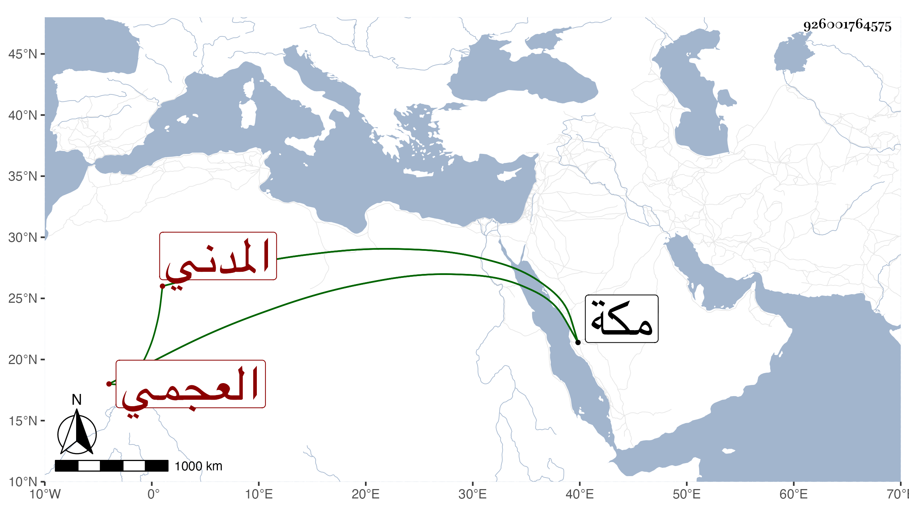

0902Sakhawi.DawLamic.ITO20230111-ara1.EIS1600.926001764575
Biography ID: 926001764575
152
خديجة ابنة حسن العجمي المدني والدها أم خليل . ولدت بمكة وأحضرت في آخر الرابعة تاسع جمادى الاولى سنة سبع وتسعين وسبعمائة على الشمس بن سكر الاول من حديثه تخريج التقي الفاسي وغيره وما علم ابن فهد بذلك إلا بعد موتها بأيام فلم تحدث وقد تزوجها الشهاب الشوائطي فأولدها أولاده محمدا وعليا وفاطمة . ماتت بمكة في ذي الحجة سنة تسع وخمسين . ذكرها ابن فهد .
